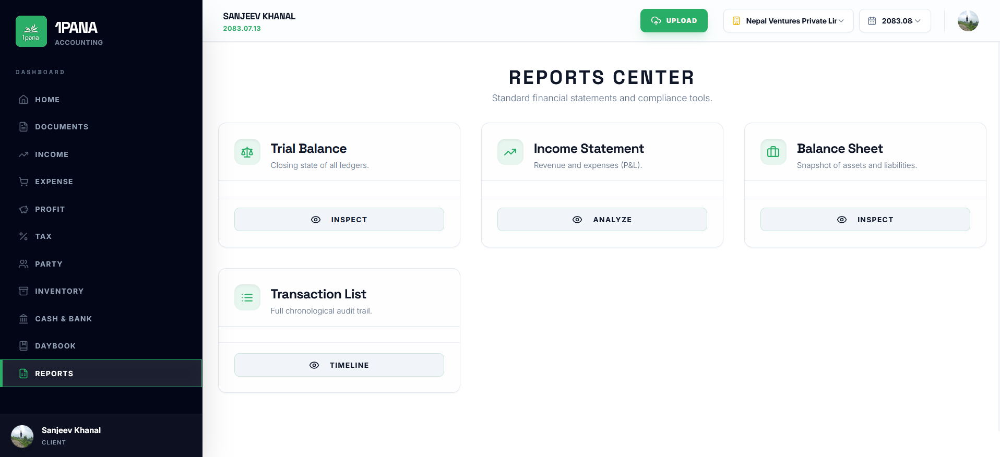

Hi, I am Sanjeev Khanal
Financial Advisory, Corporate Modelling & Accounting Systems
I am a finance and accounting professional with over five years of practice. I help organisations and firms in Nepal prepare NFRS compliant statements, reconstruct incomplete financial records, build robust credit models for bank financing, and design software database architecture.
Financial projections and debt capacity models verified for approved credit facilities.
Financial statements prepared in accordance with standards applicable in Nepal.
Statutory audit articleship training alongside independent financial advisory.
1Pana Accounting
A functional managed accounting MVP developed across six months (three months of active core development followed by three months of operational refinement and testing).
Demonstrates practical capability bridging accounting standards with modern software system architecture.

Professional Background
Finance and accounting professional based in Lalitpur, Nepal, with over five years of practice covering statutory audit, NFRS financial statement preparation, investigative ledger reconstruction, corporate financial modelling, and software database design.
Practice & Approach
My work combines formal CA articleship training with direct project engagements. I have prepared financial statements under NFRS frameworks, reconstructed incomplete ledgers from primary source documents, and built corporate models for bank financing.
All engagements begin directly from verified records including bank statements, tax deduction records, and commercial agreements. The objective is to produce clean, defensible financial data suitable for institutional review.
Institute of Chartered Accountants of Nepal
Career History & Engagement Details
Financial Consultant & Audit Support (Independent Practice)
Independent advisory focused on financial modelling for bank facilities, financial statement preparation, NFRS/NAS adoption, and audit management:
- Corporate Financing Engagements: Built financial projections and financial models supporting credit approvals exceeding NPR 1 Cr in term loan and working capital facilities.
- First-time Framework Implementation: Designed and implemented initial financial reporting frameworks for research and sector organizations.
- NPO Audit & NAS Adoption: Facilitated first-time NAS adoption for non-profit entities, finalized accounting statements, and coordinated external audit procedures.
- Tax Compliance Support: Assisted with complex tax return preparation and statutory filings tailored for software export operations.
Articleship Trainee | M. Khanal & Co., Chartered Accountants
Executed statutory audits, investigative record reviews, donor project compilations, and internal control evaluations across multiple sectors:
- Investigative Audit Execution: Executed investigative audits to examine financial discrepancies and verify transactional records across internal ledgers.
- Statutory Audit & Record Reconstruction: Reconstructed incomplete accounting books by cross-referencing primary documentation, bank statements, and tax records.
- Brokerage & Financial Sector Audits: Conducted statutory audits for licensed capital market brokerages and evaluated internal reporting controls.
- Commercial Entity Audits: Reconciled inter-group balances, verified VAT compliance, and managed statutory audit fieldwork for commercial entities.
- Public Sector Department Audits: Audited branch operations and department records for statutory financial institutions, highlighting reporting gaps and control weaknesses.
- Donor-Funded Project Statements: Compiled and prepared financial reporting packages for 20+ distinct donor-funded development projects.
- Internal & Vendor Audits: Executed large-volume vendor payment verifications and internal audit procedures across hydropower, healthcare, and capital market entities.
Independent Systems & Publishing Projects
- 1Pana Accounting (1pana.com): Architected and built a functional managed accounting MVP across six months of development (three months of active core building followed by three months of operational refining and test runs). Configured NoSQL database schemas, Firebase backend logic, and full-stack deployment.
- Nepal Venture (nepalventure.com): Developed a startup-investor platform prototype, structuring core database architecture and reporting flows. Following initial web publication without public advertising, the platform attracted profiles from 15+ early-stage startups.
- The Awareness Framework (Manuscript): Co-authored a complete book manuscript (ISBN: 9789937192835) prepared for publication.
Accounting Standards Board (ASB) Engagement
Independently engaged by the Accounting Standards Board (ASB) Nepal for technical review and finalization work on NFRS 2018 documentation following initial review assignments.
Services & Specialisations
Structured advisory and technical support across financial reporting, corporate modelling, audit management, operational accounting, and software systems.
Service Offerings & Engagement Scope
Financial Reporting & Compliance
Preparation of reliable, audit-ready financial statements in accordance with applicable accounting frameworks in Nepal:
Preparation of complete financial statements under NFRS, NFRS for SMEs, and NAS for NPOs.
- Full balance sheet, income statement & cash flow compilation
- Statement of changes in equity & accounting policy notes
- Framework compliance check for statutory filings
Investigative reconstruction of disordered books of accounts from source documents.
- Bank transaction matching & TDS reconciliation
- Ledger rebuilding from bank statements & invoices
- Establishing verifiable opening balances for audit
Comprehensive support to prepare for, coordinate, and expedite statutory or donor audits.
- Audit file compilation & supporting schedule preparation
- Managing auditor queries and query resolution
- Liaison between management and statutory external auditors
Assisting organizations with the initial adoption and practical application of NFRS standards.
- Gap analysis of existing accounting policies
- Chart of accounts restructuring for NFRS/NAS alignment
- First-time adoption note disclosures and reconciliations
Financial Planning & Analysis
Financial models and internal reporting structures designed to support corporate decision-making and institutional lending:
Integrated financial models and projections built for bank financing facilities and management planning.
- 3-statement integrated forecast models (P&L, BS, Cash Flow)
- Working capital limit justification & term loan debt capacity models
- Sensitivity stress testing & DSCR ratio analysis
Designing clear internal management reports and executive dashboards from raw ledger data.
- Monthly budget vs. actual variance analysis reporting
- Key performance metrics (KPI) tracking templates
- Executive summaries for board and leadership review
Operational Accounting Support
Hands-on support for core ledger operations, statutory payroll compliance, and standard operating procedures:
Structuring systematically tracked AR/AP ledgers to maintain cash flow control.
- Receivables ageing analysis & overdue follow-up tracking
- Payable scheduling & vendor reconciliation verification
Accurate payroll processing and statutory compliance calculations tailored for organisations in Nepal.
- Monthly staff payroll computation & payslip generation
- Salary TDS withholding calculations & SSF calculations
Designing standard operating procedures and internal control workflows for accounting departments.
- Standard operating procedures (SOPs) for payment authorizations
- Inventory & petty cash control workflow documentation
Systems & Database Structure
Technical advisory bridging traditional accounting logic with database schema design and software application architecture:
Designing relational and document database structures for financial tools, accounting platforms, and reporting applications.
- Ledger database architecture (PostgreSQL, Firebase NoSQL)
- Double-entry chart of accounts data model planning
- Workflow API structure & automated reporting logic design
Direct Contact
Available for financial advisory engagements, audit support assignments, and financial modelling projects.